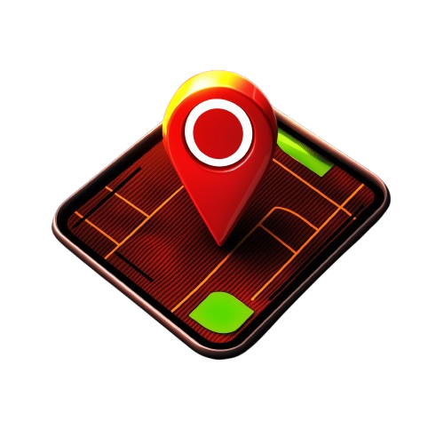

<wladcy-kostek-map *ngIf="router.url === '/map'"></wladcy-kostek-map>
<div class="bg w-full h-full">
  <wladcy-kostek-news *ngIf="router.url === '/news'"></wladcy-kostek-news>
  <div class="login w-full h-full" *ngIf="router.url === '/login'">
    <video #vid src="../assets/fire.mp4" loop autoplay muted></video>
    <div class="icons">
      
      
    </div>
  </div>
  <div class="enter w-full h-full" *ngIf="router.url === '/'">
    <div class="login-enter">
      <input type="text" class="px-4 py-2 bg-black text-white" (change)="enterName($event)">
      <button
        class="px-4 py-2 bg-black text-white"
        (click)="router.navigateByUrl('/login'); video.nativeElement.play()"
      >
        Watch The World Burn
      </button>
    </div>
    <video #vid src="../assets/fire.mp4" loop autoplay muted></video>
  </div>
</div>
